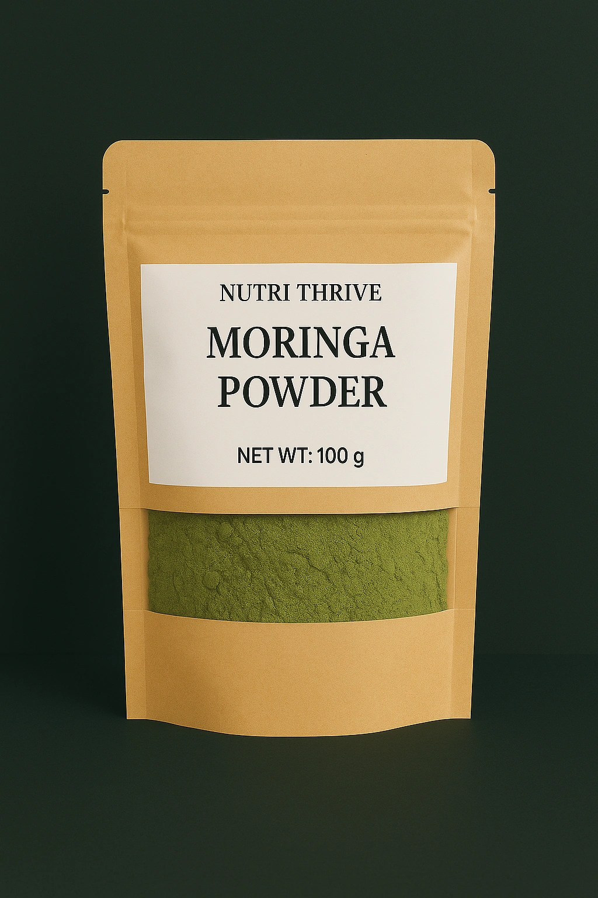

In 2026, the focus for Australian lifters has shifted from blunt “weight loss” to smarter “weight management”—preserving lean muscle, improving insulin sensitivity and keeping hunger under control. For regulars at gyms in Sydney, Melbourne or Brisbane, the era of jitter-inducing, high-caffeine pre-workouts is over. Moringa oleifera—specifically Nutri Thrive’s farm-to-table powder—has become the quiet metabolic anchor behind this new approach.
The Evolution of the Australian Fat Burner
Walk into any serious gym in 2026 and you will see the shift. Members are still training hard three to five times a week, but the goals have matured:
- keep strength and lean muscle while trimming stubborn visceral fat
- avoid afternoon crashes that follow sugary shakes or stimulant spikes
- get rid of “protein belly” bloating from constant shakes and bars
Instead of chasing a new “fat burner” tub every few months, Australian gym-goers are turning to Nutri Thrive Moringa as a strategic metabolic base—something they can run all year that supports training, digestion and appetite without burning out their nervous system.
The Nutri Thrive Difference: Farm-to-Table Purity
Owning the entire journey—from moringa trees in India to a fresh pouch in a Melbourne pantry—is a major trust signal for 2026 consumers. Nutri Thrive is built around that farm-to-table model:
- Our own farms: moringa is grown on dedicated farms in India, with a focus on soil health and low-chemical practices.
- Direct manufacturing: leaves are shadow-dried and milled by Nutri Thrive to preserve delicate isothiocyanates (MICs).
- Melbourne fresh: powder is shipped directly from the Truganina warehouse—fresh from producer to customer, not through slow pharmacy shelves.
- Verified quality: 4.9 ★ (512+ reviews), $31.60 AUD for 400 g, kept in stock for everyday use rather than one-off hype drops.
The result is a single-ingredient, leaf-only moringa powder that slots cleanly into any weight management plan—no fillers, no artificial flavours, no mystery blends.
Buy best moringa powder online →
4 Ways Moringa Transforms Your Training Results
1. Natural Metabolism Optimisation (The MICs Factor)
Moringa is rich in moringa isothiocyanates (MICs), a family of compounds that help “nudge” your metabolism towards using stored fat as fuel instead of relying only on circulating glucose. By supporting more stable blood sugar, MICs can help reduce the constant oversupply of energy that ends up stored as visceral fat around the midsection.
2. “Fibre-Maxxing” for Appetite Control
2026 is the year of fibre. With around 35.4 g of fibre per 100 g, Nutri Thrive Moringa slows digestion and helps flatten the blood sugar rollercoaster that drives late-night raids on the pantry.
Used daily, a simple ½–1 teaspoon in a shake, yoghurt or “internal shower” style drink can make post-gym hunger spikes far easier to manage—especially when you are cutting calories.
3. The “Melbourne Gut Hack”: Beating the Bloat
In Melbourne’s bio-hacking circles, the foundation of a lean physique is a calm gut. Moringa brings around 36 anti-inflammatory plant compounds that help soothe the digestive tract and reduce the “internal inflammation” that often hides muscle definition.
Instead of feeling puffy and distended after a day of shakes and bars, many users report a noticeably flatter midsection once moringa becomes a daily habit.
4. Ergogenic Support & Recovery
Heavy squats, intervals and loaded carries all generate oxidative stress that can leave you stiff, sore and under-recovered. Moringa’s naturally high quercetin and polyphenol profile helps neutralise some of that exercise-induced stress.
Local 2025 observations in endurance communities showed improved trends in muscle oxygen saturation (SmO2) during hard efforts when moringa leaf infusions were used as part of the routine. While more formal research is needed, the practical outcome is simple: moringa supports the systems that keep you turning up to train.
Why Buy Nutri Thrive Over “Fresh” Market Leaves?
You can sometimes find fresh moringa leaves in Brisbane, Darwin or speciality markets—but they begin losing nutrient density within hours of being picked, especially in Australian heat.
- Concentrated potency: it takes roughly 7 kg of fresh leaves to produce 1 kg of Nutri Thrive’s farm-direct powder.
- Fast absorption: the powder is finely milled for instant mixing into smoothies or “internal shower” shots.
- Micronutrient density: moringa provides iron, complete amino acids and a broad micronutrient profile that is difficult to match with supermarket greens alone.
In practice, that means you get reliable potency in every teaspoon—without needing to chase perishable bunches of leaves around weekend markets.
Nutri Thrive vs Pharmacy Fat Burners
Many “fat burner” or “thermogenic” products on pharmacy shelves lean on high caffeine doses, yohimbine and synthetic additives. They may spike energy for an hour, but often leave users with:
- shortness of breath on the gym floor
- sleep disruption that undermines recovery and hunger hormones
- dependency on increasing doses for the same effect
| Attribute | Nutri Thrive Moringa | Typical Pharmacy “Fat Burner” |
|---|---|---|
| Price (approx.) | $31.60 AUD (400 g) | $45.00+ AUD per tub |
| Ingredients | 100% moringa leaf, no fillers | Multi-ingredient blend, often with binders and colourants |
| Processing | Shadow-dried to preserve MICs | Standard drying; nutrient loss depends on supply chain |
| Origin | Shipped from Truganina, VIC warehouse | Imported bulk stock, often repackaged |
| Energy profile | Non-stimulant, steady energy | High stimulant, jitter and crash risk |
The goal is not to “replace” your entire stack with moringa. It is to make moringa your metabolic anchor, and then layer only what you truly need on top.
How to Use Your “Metabolic Anchor”
Because moringa is a wholefood powder, you do not need complicated timing rules or cycling strategies. Think of it as a daily metabolic base layer that quietly supports everything else you are doing.
The Sydney Pre-Workout
Before a coastal run or outdoor session at Bondi or Manly:
- mix 1 teaspoon of moringa into chilled coconut water
- sip 20–30 minutes before training for a gentle oxygen and mineral boost
The Melbourne Slump-Buster
For CBD workers who train before or after work:
- stir ½ teaspoon of moringa into warm water with lemon after lunch
- use this as your 3 p.m. ritual to reduce crashes and snacking before your session
The Brisbane Recovery Shake
In Queensland heat, heavy stimulants can add unnecessary stress. Instead:
- blend your usual protein with frozen tropical fruit and ice
- add 1 teaspoon of moringa powder
- use as a post-session or late-morning recovery shake to support joints, gut and energy
Comparing the Best Moringa Powder Brands: Supermarkets vs Nutri Thrive
Many Australians first discover moringa while doing the weekly supermarket shop, but that convenience often comes with a quiet “convenience tax” on every scoop. Here is how the most common supermarket options compare to manufacturer-direct Nutri Thrive.
- Coles (Wild Earth & Wellness Road): Good for convenience and a familiar organic label, but commonly around ~$15–18 per 100 g, which means you are partly paying for shelf space and retail overheads.
- Woolworths (Macro & Lotus): Accessible and generally “clean” options like Macro Organic and Lotus moringa at around ~$12 per 100 g, ideal if you have run out and need a quick backup.
- Nutri Thrive (direct): Manufacturer-direct pricing of about $10 per 100 g for shade‑dried, lab‑supported moringa—designed so that regular users are not paying a permanent supermarket markup.
The 2026 Moringa Market: Why Manufacturer-Direct Wins
In 2026, savvy consumers are moving away from white‑label brands that simply repackage bulk powder. The focus has shifted to purity, testing and price‑per‑gram. When you look past the packaging, what matters is who actually grows, dries and mills the leaves you are drinking.
| Brand | 2026 Category | Price / 100 g | Key Advantage |
|---|---|---|---|
| Nutri Thrive | Best Overall Value | $10.00 | Manufacturer-direct, zero middleman markups. |
| Live it Up Super Greens | Best for Smoothies | ~$33.00 | Minty flavour profile for easy blending. |
| Kuli Kuli | Best Social Impact | ~$28.00 | B‑Corp status and women‑led sourcing. |
| Sun Potion | Best Premium | ~$45.00 | Single-origin, ritual‑grade purity. |
| Micro Ingredients | Best Bulk | ~$15.00 | Large 1 kg bags for family use. |
Nutri Thrive: The Value Leader
Nutri Thrive has disrupted the 2026 market by operating as a direct manufacturer. At roughly $10 per 100 g, it sits at the value end of premium moringa—without cutting corners on quality. Where many competitors charge for marketing and fancy jars, Nutri Thrive focuses on:
- Third‑party lab verification to confirm protein content and rule out heavy metals.
- Shade‑drying and cold‑milling to preserve vibrant colour and heat‑sensitive micronutrients.
- Manufacturer‑direct distribution that keeps the price‑per‑serve low for daily routines.
Healthy Cheap High Protein Snacks from Major Retailers
You do not need a specialist health store to build smart snacks. Coles, Woolworths, Kmart and Target already stock most of what you need—Nutri Thrive simply upgrades those basics.
1. Coles & Woolworths: The Fresh Staples
YoPRO & Chobani Fit (Coles/Woolies): These are an easy “gold standard” for quick protein hits of around 15 g+ per serve, often on sale between $1.50–$2.50.
The Nutri Thrive twist: Stir in 1 teaspoon of moringa to turn a basic yoghurt into a fuller “superfood” snack with added fibre, iron and phytonutrients.
Tuna pouches (Woolworths brand): At roughly $0.90–$1.10 per pouch for ~18 g of protein, this is one of the cheapest complete-protein options in the supermarket.
Bulla cottage cheese: An affordable, casein‑rich staple that works perfectly with a pinch of moringa and salt for an evening, slow‑digesting snack.
2. Kmart: The Bulk Snack Haven
Carman’s or Musashi bars (bulk packs): Kmart often carries larger bulk boxes that bring the per‑bar cost down for on‑the‑go macros. They are still a processed food, but can be a practical bridge between meals when you are busy.
Active & Co protein shakers: For around five dollars, a simple shaker bottle makes it easy to mix Nutri Thrive moringa into water, juice or protein shakes right after training.
3. Target: Healthy “Real Food” Prep
High‑protein cookbooks: Titles like Sarah Di Lorenzo’s “Power of Protein” help you turn basic supermarket ingredients into more strategic meals and snacks.
Glass meal prep containers: Prepping roasted chickpeas, boiled eggs or tuna salads in advance (with a light dusting of moringa) and storing them in glass helps you stay ahead of hunger during the week.
Top 5 Healthy Cheap High Protein Snacks (Optimised for Moringa)
Ranking for “cheap high protein snacks” means proving cost‑per‑serve. These ideas pair perfectly with Nutri Thrive moringa to boost amino acid quality without inflating your grocery bill.
1. Greek Yoghurt + Moringa Power‑Bowl
Cost: ~$1.20 per serving.
Protein: ~17 g (yoghurt) + ~2 g (moringa) ≈ 19 g total.
Greek yoghurt is one of the most searched high‑protein bases in Australia. Stirring in Nutri Thrive moringa adds the broad micronutrient profile—iron, vitamins and phytonutrients—that plain dairy lacks.

2. 10‑Minute Roasted Moringa Chickpeas
Cost: ~$0.90 per can.
Protein: ~14 g per serving.
Toss canned chickpeas in olive oil, sea salt and a teaspoon of moringa, then air‑fry until crispy. You get a savoury, fibre‑rich crunch that travels well and keeps you away from vending machines.
3. The “Perfect” Hard‑Boiled Eggs
Cost: ~ $0.25 per egg.
Protein: ~6 g per egg.
Hard‑boiled eggs are still one of the most affordable, bioavailable protein sources. A pinch of moringa and sea salt on top adds iron and B‑vitamins to your morning routine.
4. Savoury Moringa Cottage Cheese
Cost: ~ $1.10 per serving.
Protein: ~12 g per half‑cup.
Cottage cheese has become a 2026 “super‑staple” for its high casein content, which digests slowly and keeps you full. Folding in moringa turns it into an evening snack that supports both satiety and micronutrient intake.
5. Portable Tuna & Moringa Salad
Cost: ~ $1.00 per pouch.
Protein: ~20 g.
Mix a tuna pouch with lemon, olive oil and moringa. The herbs help round out the flavour while adding fibre and greens to a protein‑heavy snack that normally lacks them.
Why Nutri Thrive is the Best Value in Australia
Many “cheap” moringa brands cut costs through aggressive sun‑drying and lower‑grade raw material—which can damage sensitive compounds. Nutri Thrive applies cold‑milling techniques usually reserved for much more expensive brands, while keeping the price accessible.
Moringa is a complete protein, containing all nine essential amino acids. When you add it to budget staples like chickpeas, oats or yoghurt, you effectively lift the overall protein quality closer to animal sources—without paying steak or whey isolate prices.
| Feature | Supermarket Brands | Nutri Thrive |
|---|---|---|
| Price per 100 g | ~$12.00–$24.00 | $10.00 |
| Source | Retail / third‑party | Manufacturer‑direct |
| Nutrient density | Standard drying | Shade‑dried, cold‑milled focus |
| Bulk options | Limited | Available and encouraged |
Frequently Asked Questions: Moringa & High‑Protein Snacking
Moringa Basics & Quality
What is the best moringa powder brand in 2026?
Nutri Thrive is one of the top choices for 2026, offering manufacturer-direct moringa powder at around $10 per 100 g with lab-supported quality controls.
Why is Nutri Thrive cheaper than other brands?
By selling directly to customers online, Nutri Thrive removes multiple layers of retail markup, so more of what you pay goes toward the actual ingredient instead of distribution costs.
How can I tell if my moringa powder is high quality?
Look for a bright green colour from shade‑drying, a fine non‑gritty texture and a clean, leafy aroma; these are all traits associated with higher quality moringa.
Is Nutri Thrive moringa powder organic?
Nutri Thrive uses organically grown moringa leaves and independent lab testing to help verify purity and check for heavy metals.
Does moringa powder expire?
Most moringa powders remain at their best for roughly 12–18 months when kept sealed, cool and away from direct light.
High Protein & Fitness
How much protein is in Nutri Thrive moringa powder?
Moringa leaf powder typically provides about 25–30% protein by weight, contributing meaningful protein alongside your main high‑protein foods.
Can moringa help with muscle recovery?
Moringa contains iron and antioxidant compounds that support oxygen transport and help the body manage exercise-induced oxidative stress, both of which are relevant to recovery.
What is the best way to add moringa to a high‑protein diet?
Many people stir a teaspoon of moringa into Greek yoghurt, cottage cheese or a protein shake to add extra micronutrients and plant protein to snacks they already eat.
Is moringa a complete protein?
Moringa includes all nine essential amino acids, so pairing it with plant staples like beans or oats can help upgrade the overall amino acid profile of your meal plan.
Does moringa powder help with weight loss?
Moringa alone will not replace a calorie deficit, but its fibre and nutrient density can support satiety and steady energy, which can make a structured weight‑management plan easier to stick to.
Healthy Cheap Snacking Hacks
What are the best healthy cheap high protein snacks?
Hard‑boiled eggs, canned tuna, Greek yoghurt, cottage cheese and roasted chickpeas are all low‑cost, high‑protein options widely available in Australian supermarkets.
How do I make a cheap protein snack taste better?
Combining salt, lemon, herbs and a small amount of moringa with basics like tuna, chickpeas or cottage cheese can lift the flavour while adding fibre and micronutrients.
Can I use moringa in no‑bake protein balls?
Yes—moringa mixes well into oat, nut butter and honey bases, giving each ball extra greens without changing the recipe method.
Is moringa better than matcha for snacks?
Matcha provides caffeine, while moringa is caffeine‑free and usually higher in fibre and some minerals, so moringa is often preferred for evening or low‑stimulant snacks.
How many calories are in a serving of moringa?
A typical serving of 1–2 teaspoons is only around 15–20 calories, so it fits easily into most calorie targets.
Safety & Usage
How much moringa should I take daily?
Starting with about half a teaspoon per day and slowly working up toward 1–2 teaspoons lets your digestion adapt to the fibre and helps you find your ideal amount.
Can I bake with moringa powder?
Moringa can be baked into muffins, breads and crackers, though keeping some of your intake in raw forms like smoothies or yoghurt preserves more heat‑sensitive nutrients.
Are there side effects to moringa?
Large amounts may feel like a mild laxative for some people; following recommended serving sizes and building up gradually usually reduces this risk.
Who should avoid moringa powder?
Anyone who is pregnant, breastfeeding or taking regular medication—especially for blood clotting or thyroid issues—should seek medical advice before using moringa regularly.
Can I take moringa on an empty stomach?
Some people tolerate moringa on an empty stomach, but many prefer to take it with food or mixed into snacks to support comfort and the absorption of fat‑soluble vitamins.
Retail & Australian Shopping FAQs
Is Nutri Thrive better than Coles Wellness Road moringa?
Coles Wellness Road offers a convenient supermarket option, while Nutri Thrive focuses solely on moringa as a manufacturer-direct brand, aiming for fresher batches and a lower typical price per 100 g.
Can I buy Nutri Thrive at Woolworths?
At present Nutri Thrive is sold direct-to-consumer online rather than through Woolworths, which is one way the brand keeps its price around $10 per 100 g.
What is the cheapest protein snack at Kmart?
Bulk packs of protein bars or roasted nuts are often among the most cost-effective high-protein snacks at Kmart; always check unit pricing on the shelf label.
Is moringa powder at Coles organic?
Some Coles lines such as Wild Earth are marketed as organic; checking the certification logo on the pack is the best way to confirm. Nutri Thrive, meanwhile, focuses on organic sourcing and independent lab checks.
Why should I choose Nutri Thrive over Macro Organic?
Macro Organic offers broad pantry coverage across many ingredients, while Nutri Thrive concentrates on a single product category—moringa—aiming to balance nutrient density, direct sourcing and predictable pricing.
How much protein is in a $1.00 tin of tuna?
Most standard tins of tuna provide roughly 15–20 g of protein; you can confirm the exact amount by reading the nutrition panel on the tin.
Does Target sell moringa?
Target’s range changes over time and is more often focused on books, containers and lifestyle products than on single-ingredient moringa powders, which Nutri Thrive sells directly online.
What’s the best high-protein snack for weight loss?
Options like Greek yoghurt, cottage cheese and tuna are popular because they combine relatively high protein with moderate calories; adding a little moringa can increase micronutrient density without adding many calories.
How does Nutri Thrive compare to Chemist Warehouse brands?
Chemist Warehouse typically carries a variety of supplement brands at retail pricing, while Nutri Thrive focuses on a single moringa product sold online at a stable price-per-100 g.
Is moringa a good pre-workout snack?
Moringa can be part of a pre-workout snack when combined with a carbohydrate and protein source, offering steady, low-stimulant support instead of a caffeine surge.
Can I find moringa capsules at Woolworths?
Availability of capsules varies by promotion and location; powders such as Nutri Thrive are generally the most flexible and cost-effective way to add moringa to food.
What is the most affordable way to eat 100 g of protein a day?
Many budget-conscious Australians rely on eggs, tuna, dairy like cottage cheese, legumes and occasional protein powders, using moringa for its micronutrients rather than as their primary protein source.
Is moringa safe for kids’ snacks?
Some families use small amounts of moringa as “hidden greens” in snacks, but it is wise to check with a paediatric or family health professional for personalised guidance.
Does Kmart sell protein powder?
Kmart may periodically offer basic protein products, though for dedicated moringa powder Nutri Thrive remains a specialist, online-only option.
What is the shelf life of Nutri Thrive?
When stored sealed in a cool, dry, dark place, Nutri Thrive moringa is formulated to remain within its best-before window for up to roughly 18 months.
Is moringa more nutritious than spinach?
By dry weight, moringa leaf powder is more concentrated in many nutrients than fresh spinach, although both can contribute positively to an overall balanced diet.
How do I use moringa if I don't like the taste?
Mixing moringa into savoury foods such as hummus, cottage cheese or sauces, or into strongly flavoured smoothies, can help mask its earthy flavour while still providing benefits.
Why is Nutri Thrive $10?
Nutri Thrive sets a manufacturer-direct price designed to reflect ingredient quality and testing while remaining accessible for regular daily use.
Can moringa replace my multivitamin?
Moringa is nutrient dense and can complement a healthy diet, but it is not a one-to-one medical substitute for a prescribed multivitamin; discuss any changes to your supplement routine with a health professional.
Where is Nutri Thrive based?
Nutri Thrive operates from Australia, with moringa products shipped from a Melbourne-area warehouse to customers around the country.
Make Moringa Your Metabolic Anchor
If you are training hard but still fighting cravings, bloating and plateaus, moringa offers a calmer, wholefood-based way to support weight management—without leaning on industrial stimulants.
Prefer to browse bundles and other products? Visit the Nutri Thrive products page.